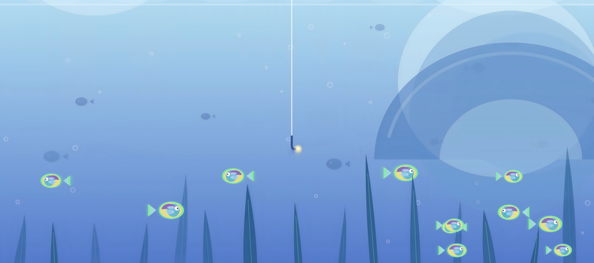

Fish of Fortune
A fishing game that turns the pitch of your voice into the depth of a hook.
Play the game ↗
Play with pitch
Hum or whistle low to move the hook down, raise your pitch to lift it, and move the mouse to steer across the water. The game requires a microphone.
Let sound control one dimension
Pitch controls depth while the mouse handles horizontal position. The moving hook gives immediate feedback when players change the note they are holding.